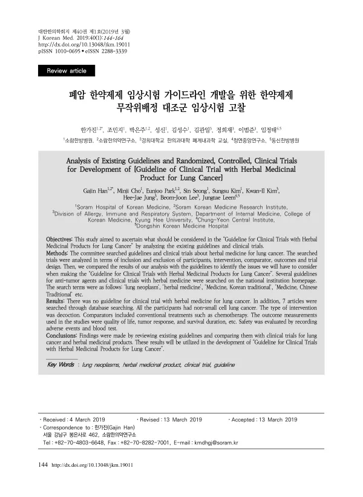

Analysis of Existing Guidelines and Controlled Clinical Trials for Development of [Guideline of Clinical Trials with Herbal Medicinal Products for Colorectal Cancer]
Han G, Cho M, Park E, Seong S, Kim S, Kim Ki, Jung Hj, Lee Bj, Leem J
Journal of Korean Medicine 40(1):124-152

첫 장 · 오픈액세스First page · open access
논문 소개Summary
폐암 한약제제 임상시험 가이드라인을 만들기 위해, 기존 가이드라인과 한약 무작위 배정 대조군 임상시험을 견주어 본 연구입니다. 항종양제 가이드라인은 여럿 있었으나 폐암 한약 임상시험을 위한 것은 없었습니다. 검색으로 7편을 찾아 대상자와 중재, 대조군, 결과지표, 연구설계로 나누어 분석했습니다. 참여자는 모두 비소세포폐암 환자였고 중재는 전부 탕약이었으며 대조군에는 항암화학요법 같은 기존 치료가 들어 있었습니다. 결과지표로는 삶의 질과 종양 반응, 생존 기간 등이 쓰였고 안전성은 이상반응 기록과 혈액검사로 평가했습니다. 저자들은 이 비교 결과를 폐암 한약제제 임상시험 가이드라인 개발에 쓰겠다고 밝혔습니다.
A study comparing existing guidelines with randomised controlled trials of herbal medicinal products, in order to develop a guideline for clinical trials in lung cancer. Several guidelines for antitumour agents existed, but none for trials of herbal medicine in lung cancer. Database searching identified seven articles, analysed by participants, intervention, comparator, outcome and trial design. All participants had non-small cell lung cancer, every intervention was a decoction, and comparators included conventional treatments such as chemotherapy. Outcomes used were quality of life, tumour response and survival duration, with safety assessed by recording adverse events and by blood testing. The authors state that these comparisons will be applied in developing the guideline for clinical trials with herbal medicinal products for lung cancer.
인용Cite
Han G, Cho M, Park E, Seong S, Kim S, Kim Ki, Jung Hj, Lee Bj, Leem J. Analysis of Existing Guidelines and Controlled Clinical Trials for Development of [Guideline of Clinical Trials with Herbal Medicinal Products for Colorectal Cancer]. Journal of Korean Medicine. 2019;40(1):124-152. doi:10.13048/jkm.19011